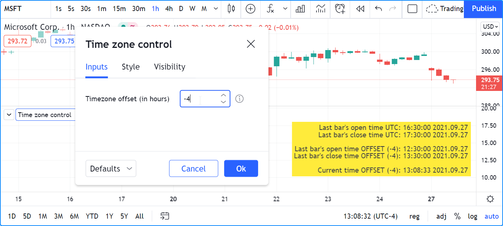
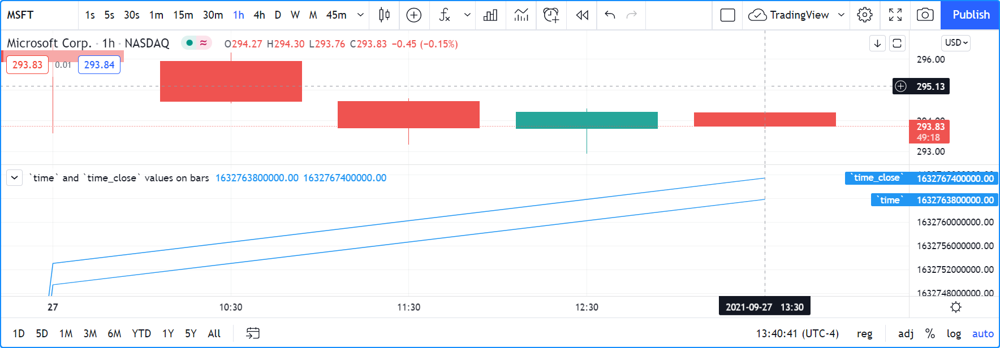
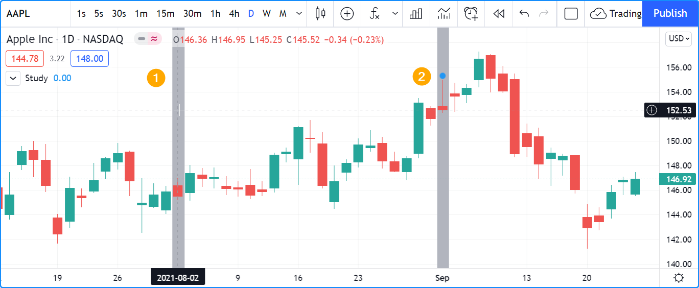
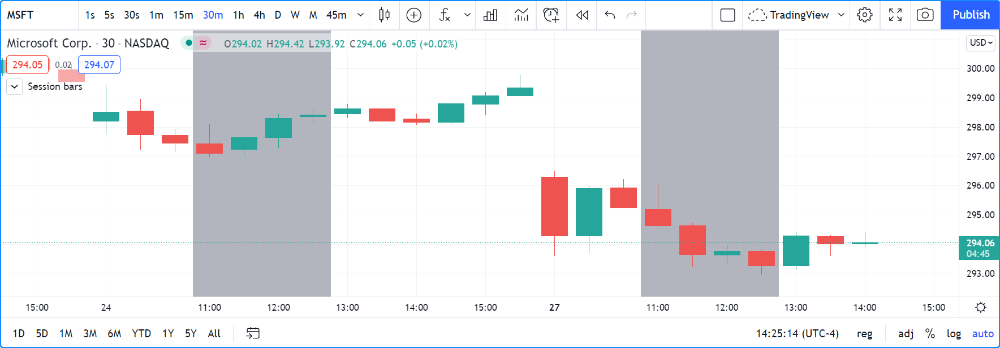
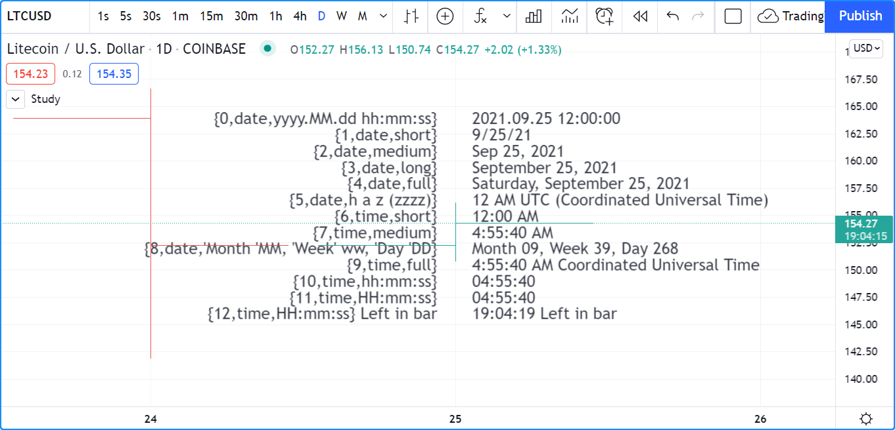

Time¶
Introduction¶
Four references¶
Four different references come into play when using date and time values in Pine Script®:
- UTC time zone: The native format for time values in Pine Script® is the Unix time in milliseconds. Unix time is the time elapsed since the Unix Epoch on January 1st, 1970. See here for the current Unix time in seconds and here for more information on Unix Time. A value for the Unix time is called a timestamp. Unix timestamps are always expressed in the UTC (or “GMT”, or “GMT+0”) time zone. They are measured from a fixed reference, i.e., the Unix Epoch, and do not vary with time zones. Some built-ins use the UTC time zone as a reference.
- Exchange time zone: A second time-related key reference for traders is the time zone of the exchange where an instrument is traded. Some built-ins like hour return values in the exchange’s time zone by default.
timezoneparameter: Some functions that normally return values in the exchange’s time zone, such as hour() include atimezoneparameter that allows you to adapt the function’s result to another time zone. Other functions like time() include bothsessionandtimezoneparameters. In those cases, thetimezoneargument applies to how thesessionargument is interpreted — not to the time value returned by the function.- Chart’s time zone: This is the time zone chosen by the user from the chart using the “Chart Settings/Symbol/Time Zone” field. This setting only affects the display of dates and times on the chart. It does not affect the behavior of Pine scripts, and they have no visibility over this setting.
When discussing variables or functions, we will note if they return dates or times in UTC or exchange time zone. Scripts do not have visibility on the user’s time zone setting on his chart.
Time built-ins¶
Pine Script® has built-in variables to:
- Get timestamp information from the current bar (UTC time zone): time and time_close
- Get timestamp information for the beginning of the current trading day (UTC time zone): time_tradingday
- Get the current time in one-second increments (UTC time zone): timenow
- Retrieve calendar and time values from the bar (exchange time zone): year, month, weekofyear, dayofmonth, dayofweek, hour, minute and second
- Return the time zone of the exchange of the chart’s symbol with syminfo.timezone
There are also built-in functions that can:
- Return timestamps of bars from other timeframes with time() and time_close(), without the need for a request.security() call
- Retrieve calendar and time values from any timestamp, which can be offset with a time zone: year(), month(), weekofyear(), dayofmonth(), dayofweek(), hour(), minute() and second()
- Create a timestamp using timestamp()
- Convert a timestamp to a formatted date/time string for display, using str.format()
- Input data and time values. See the section on Inputs.
- Work with session information.
Time zones¶
TradingViewers can change the time zone used to display bar times on their charts.
Pine scripts have no visibility over this setting.
While there is a syminfo.timezone
variable to return the time zone of the exchange where the chart’s instrument is traded,
there is no chart.timezone equivalent.
When displaying times on the chart, this shows one way of providing users a way of adjusting your script’s time values to those of their chart. This way, your displayed times can match the time zone used by traders on their chart:
//@version=5
indicator("Time zone control")
MS_IN_1H = 1000 * 60 * 60
TOOLTIP01 = "Enter your time zone's offset (+ or −), including a decimal fraction if needed."
hoursOffsetInput = input.float(0.0, "Timezone offset (in hours)", minval = -12.0, maxval = 14.0, step = 0.5, tooltip = TOOLTIP01)
printTable(txt) =>
var table t = table.new(position.middle_right, 1, 1)
table.cell(t, 0, 0, txt, text_halign = text.align_right, bgcolor = color.yellow)
msOffsetInput = hoursOffsetInput * MS_IN_1H
printTable(
str.format("Last bar''s open time UTC: {0,date,HH:mm:ss yyyy.MM.dd}", time) +
str.format("\nLast bar''s close time UTC: {0,date,HH:mm:ss yyyy.MM.dd}", time_close) +
str.format("\n\nLast bar''s open time EXCHANGE: {0,date,HH:mm:ss yyyy.MM.dd}", time(timeframe.period, syminfo.session, syminfo.timezone)) +
str.format("\nLast bar''s close time EXCHANGE: {0,date,HH:mm:ss yyyy.MM.dd}", time_close(timeframe.period, syminfo.session, syminfo.timezone)) +
str.format("\n\nLast bar''s open time OFFSET ({0}): {1,date,HH:mm:ss yyyy.MM.dd}", hoursOffsetInput, time + msOffsetInput) +
str.format("\nLast bar''s close time OFFSET ({0}): {1,date,HH:mm:ss yyyy.MM.dd}", hoursOffsetInput, time_close + msOffsetInput) +
str.format("\n\nCurrent time OFFSET ({0}): {1,date,HH:mm:ss yyyy.MM.dd}", hoursOffsetInput, timenow + msOffsetInput))
Note that:
- We convert the user offset expressed in hours to milliseconds with
msOffsetInput. We then add that offset to a timestamp in UTC format before converting it to display format, e.g.,time + msOffsetInputandtimenow + msOffsetInput. - We use a tooltip to provide instructions to users.
- We provide
minvalandmaxvalvalues to protect the input field, and astepvalue of 0.5 so that when they use the field’s up/down arrows, they can intuitively figure out that fractions can be used. - The str.format() function formats our time values, namely the last bar’s time and the current time.
Some functions that normally return values in the exchange’s time zone provide means to adapt their result to another time zone through the timezone parameter.
This script illustrates how to do this with hour():
//@version=5
indicator('`hour(time, "GMT+0")` in orange')
color BLUE_LIGHT = #0000FF30
plot(hour, "", BLUE_LIGHT, 8)
plot(hour(time, syminfo.timezone))
plot(hour(time, "GMT+0"),"UTC", color.orange)
Note that:
- The hour variable and the
hour() function normally returns a value in the exchange’s time zone.
Accordingly, plots in blue for both
hourandhour(time, syminfo.timezone)overlap. Using the function form withsyminfo.timezoneis thus redundant if the exchange’s hour is required. - The orange line plotting
hour(time, "GMT+0"), however, returns the bar’s hour at UTC, or “GMT+0” time, which in this case is four hours less than the exchange’s time, since MSFT trades on the NASDAQ whose time zone is UTC-4.
Time zone strings¶
The argument used for the timezone parameter in functions such as
time(),
timestamp(),
hour(), etc., can be in different formats,
which you can find in the IANA time zone database name reference page.
Contents from the “TZ database name”, “UTC offset ±hh:mm” and “UTC DST offset ±hh:mm” columns of that page’s table can be used.
To express an offset of +5.5 hours from UTC, these strings found in the reference page are all equivalent:
"GMT+05:30""Asia/Calcutta""Asia/Colombo""Asia/Kolkata"
Non-fractional offsets can be expressed in the "GMT+5" form. "GMT+5.5" is not allowed.
Time variables¶
`time` and `time_close`¶
Let’s start by plotting time and time_close, the Unix timestamp in milliseconds of the bar’s opening and closing time:
//@version=5
indicator("`time` and `time_close` values on bars")
plot(time, "`time`")
plot(time_close, "`time_close`")
Note that:
- The time and time_close variables returns a timestamp in UNIX time, which is independent of the timezone selected by the user on his chart. In this case, the chart’s time zone setting is the exchange time zone, so whatever symbol is on the chart, its exchange time zone will be used to display the date and time values on the chart’s cursor. The NASDAQ’s time zone is UTC-4, but this only affects the chart’s display of date/time values; it does not impact the values plotted by the script.
- The last time value for the plot shown in the scale is the number of milliseconds elapsed from 00:00:00 UTC, 1 January, 1970, until the bar’s opening time. It corresponds to 17:30 on the 27th of September 2021. However, because the chart uses the UTC-4 time zone (the NASDAQ’s time zone), it displays the 13:30 time, four hours earlier than UTC time.
- The difference between the two values on the last bar is the number of milliseconds in one hour (1000 * 60 * 60 = 3,600,000) because we are on a 1H chart.
`time_tradingday`¶
time_tradingday is useful when a symbol trades on overnight sessions that start and close on different calendar days. For example, this happens in forex markets where a session can open Sunday at 17:00 and close Monday at 17:00.
The variable returns the time of the beginning of the trading day in UNIX time when used at timeframes of 1D and less. When used on timeframes higher than 1D, it returns the starting time of the last trading day in the bar (e.g., at 1W, it will return the starting time of the last trading day of the week).
`timenow`¶
timenow returns the current time in UNIX time. It works in realtime, but also when a script executes on historical bars. In realtime, your scripts will only perceive changes when they execute on feed updates. When no updates occur, the script is idle, so it cannot update its display. See the page on Pine Script®’s execution model for more information.
This script uses the values of timenow and time_close to calculate a realtime countdown for intraday bars. Contrary to the countdown on the chart, this one will only update when a feed update causes the script to execute another iteration:
//@version=5
indicator("", "", true)
printTable(txt) =>
var table t = table.new(position.middle_right, 1, 1)
table.cell(t, 0, 0, txt, text_halign = text.align_right, bgcolor = color.yellow)
printTable(str.format("{0,time,HH:mm:ss.SSS}", time_close - timenow))
Calendar dates and times¶
Calendar date and time variables such as year, month, weekofyear, dayofmonth, dayofweek, hour, minute and second can be useful to test for specific dates or times, and as arguments to timestamp().
When testing for specific dates or times, ones needs to account for the possibility that the script will be executing on timeframes where the tested condition cannot be detected, or for cases where a bar with the specific requirement will not exist. Suppose, for example, we wanted to detect the first trading day of the month. This script shows how using only dayofmonth will not work when a weekly chart is used or when no trading occurs on the 1st of the month:
//@version=5
indicator("", "", true)
firstDayIncorrect = dayofmonth == 1
firstDay = ta.change(time("M"))
plotchar(firstDayIncorrect, "firstDayIncorrect", "•", location.top, size = size.small)
bgcolor(firstDay ? color.silver : na)
Note that:
- Using
ta.change(time("M"))is more robust as it works on all months (#1 and #2), displayed as the silver background, whereas the blue dot detected usingdayofmonth == 1does not work (#1) when the first trading day of September occurs on the 2nd. - The
dayofmonth == 1condition will betrueon all intrabars of the first day of the month, butta.change(time("M"))will only betrueon the first.
If you wanted your script to only display for years 2020 and later, you could use:
//@version=5
indicator("", "", true)
plot(year >= 2020 ? close : na, linewidth = 3)
`syminfo.timezone()`¶
syminfo.timezone
returns the time zone of the chart symbol’s exchange.
It can be helpful when a timezone parameter is available in a function, and you want to mention that you are using the exchange’s timezone explicitly.
It is usually redundant because when no argument is supplied to timezone,
the exchange’s time zone is assumed.
Time functions¶
`time()` and `time_close()`¶
The time() and time_close() functions have the following signature:
time(timeframe, session, timezone) → series int
time_close(timeframe, session, timezone) → series int
They accept three arguments:
timeframe- A string in timeframe.period format.
session- An optional string in session specification format:
"hhmm-hhmm[:days]", where the[:days]part is optional. See the page on sessions for more information. timezone- An optional value that qualifies the argument for
sessionwhen one is used.
See the time() and time_close() entries in the Reference Manual for more information.
The time() function is most often used to:
- Test if a bar is in a specific time period, which will require using the
sessionparameter. In those cases,timeframe.period, i.e., the chart’s timeframe, will often be used for the first parameter. When using the function this way, we rely on the fact that it will return na when the bar is not part of the period specified in thesessionargument. - Detecting changes in higher timeframes than the chart’s by using the higher timeframe for the
timeframeargument. When using the function for this purpose, we are looking for changes in the returned value, which means the higher timeframe bar has changed. This will usually require using ta.change() to test, e.g.,ta.change(time("D"))will return the change in time when a new higher timeframe bar comes in, so the expression’s result will cast to a “bool” value when used in a conditional expression. The “bool” result will betruewhen there is a change andfalsewhen there is no change.
Testing for sessions¶
Let’s look at an example of the first case where we want to determine if a bar’s starting time is part of a period between 11:00 and 13:00:
//@version=5
indicator("Session bars", "", true)
inSession = not na(time(timeframe.period, "1100-1300"))
bgcolor(inSession ? color.silver : na)
Note that:
- We use
time(timeframe.period, "1100-1300"), which says: “Check the chart’s timeframe if the current bar’s opening time is between 11:00 and 13:00 inclusively”. The function returns its opening time if the bar is in the session. If it is not, the function returns na. - We are interested in identifying the instances when time()
does not return na
because that means the bar is in the session, so we test for
not na(...). We do not use the actual return value of time() when it is not na; we are only interested in whether it returns na or not.
Testing for changes in higher timeframes¶
It is often helpful to detect changes in a higher timeframe.
For example, you may want to detect trading day changes while on intraday charts.
For these cases, you can use the fact that time("D") returns the opening time of the 1D bar,
even if the chart is at an intraday timeframe such as 1H:
//@version=5
indicator("", "", true)
bool newDay = ta.change(time("D"))
bgcolor(newDay ? color.silver : na)
newExchangeDay = ta.change(dayofmonth)
plotchar(newExchangeDay, "newExchangeDay", "🠇", location.top, size = size.small)
Note that:
- The
newDayvariable detects changes in the opening time of 1D bars, so it follows the conventions for the chart’s symbol, which uses overnight sessions of 17:00 to 17:00. It changes values when a new session comes in. - Because
newExchangeDaydetects change in dayofmonth in the calendar day, it changes when the day changes on the chart. - The two change detection methods only coincide on the chart when there are days without trading. On Sundays here, for example, both detection methods will detect a change because the calendar day changes from the last trading day (Friday) to the first calendar day of the new week, Sunday, which is when Monday’s overnight session begins at 17:00.
Calendar dates and times¶
Calendar date and time functions such as year(), month(), weekofyear(), dayofmonth(), dayofweek(), hour(), minute() and second() can be useful to test for specific dates or times. They all have signatures similar to the ones shown here for dayofmonth():
dayofmonth(time) → series int
dayofmonth(time, timezone) → series int
This will plot the day of the opening of the bar where the January 1st, 2021 at 00:00 time falls between its time and time_close values:
//@version=5
indicator("")
exchangeDay = dayofmonth(timestamp("2021-01-01"))
plot(exchangeDay)
The value will be the 31st or the 1st, depending on the calendar day of when the session opens on the chart’s symbol. The date for symbols traded 24x7 at exchanges using the UTC time zone will be the 1st. For symbols trading on exchanges at UTC-4, the date will be the 31st.
`timestamp()`¶
The timestamp() function has a few different signatures:
timestamp(year, month, day, hour, minute, second) → simple/series int
timestamp(timezone, year, month, day, hour, minute, second) → simple/series int
timestamp(dateString) → const int
The only difference between the first two is the timezone parameter.
Its default value is syminfo.timezone.
See the Time zone strings section of this page for valid values.
The third form is used as a defval value in input.time().
See the timestamp() entry in the Reference Manual for more information.
timestamp() is useful to generate a timestamp for a specific date. To generate a timestamp for Jan 1, 2021, use either one of these methods:
//@version=5
indicator("")
yearBeginning1 = timestamp("2021-01-01")
yearBeginning2 = timestamp(2021, 1, 1, 0, 0)
printTable(txt) => var table t = table.new(position.middle_right, 1, 1), table.cell(t, 0, 0, txt, bgcolor = color.yellow)
printTable(str.format("yearBeginning1: {0,date,yyyy.MM.dd hh:mm}\nyearBeginning2: {1,date,yyyy.MM.dd hh:mm}", yearBeginning1, yearBeginning1))
You can use offsets in timestamp() arguments.
Here, we subtract 2 from the value supplied for its day parameter to get the date/time from the chart’s last bar two days ago.
Note that because of different bar alignments on various instruments,
the bar identified on the chart may not always be exactly 48 hours away,
although the function’s return value is correct:
//@version=5
indicator("")
twoDaysAgo = timestamp(year, month, dayofmonth - 2, hour, minute)
printTable(txt) => var table t = table.new(position.middle_right, 1, 1), table.cell(t, 0, 0, txt, bgcolor = color.yellow)
printTable(str.format("{0,date,yyyy.MM.dd hh:mm}", twoDaysAgo))
Formatting dates and time¶
Timestamps can be formatted using str.format(). These are examples of various formats:
//@version=5
indicator("", "", true)
print(txt, styl) =>
var alignment = styl == label.style_label_right ? text.align_right : text.align_left
var lbl = label.new(na, na, "", xloc.bar_index, yloc.price, color(na), styl, color.black, size.large, alignment)
if barstate.islast
label.set_xy(lbl, bar_index, hl2[1])
label.set_text(lbl, txt)
var string format =
"{0,date,yyyy.MM.dd hh:mm:ss}\n" +
"{1,date,short}\n" +
"{2,date,medium}\n" +
"{3,date,long}\n" +
"{4,date,full}\n" +
"{5,date,h a z (zzzz)}\n" +
"{6,time,short}\n" +
"{7,time,medium}\n" +
"{8,date,'Month 'MM, 'Week' ww, 'Day 'DD}\n" +
"{9,time,full}\n" +
"{10,time,hh:mm:ss}\n" +
"{11,time,HH:mm:ss}\n" +
"{12,time,HH:mm:ss} Left in bar\n"
print(format, label.style_label_right)
print(str.format(format,
time, time, time, time, time, time, time,
timenow, timenow, timenow, timenow,
timenow - time, time_close - timenow), label.style_label_left)